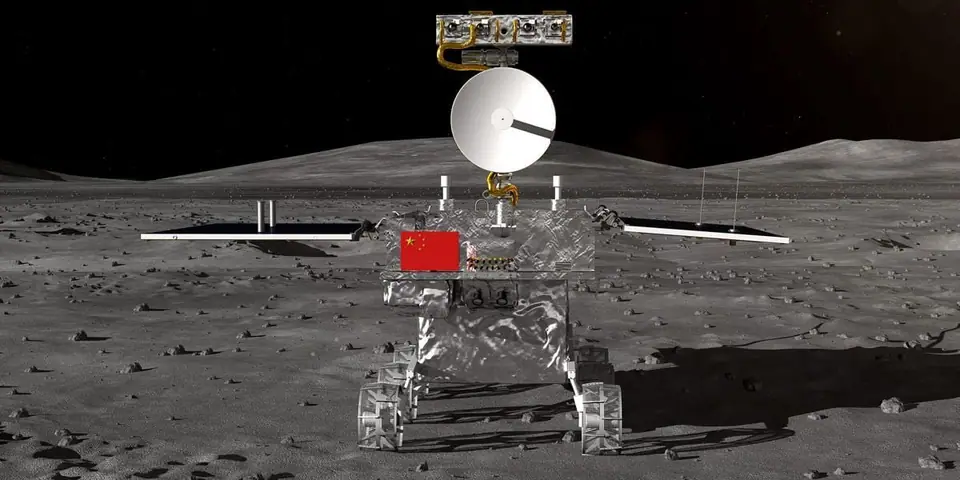
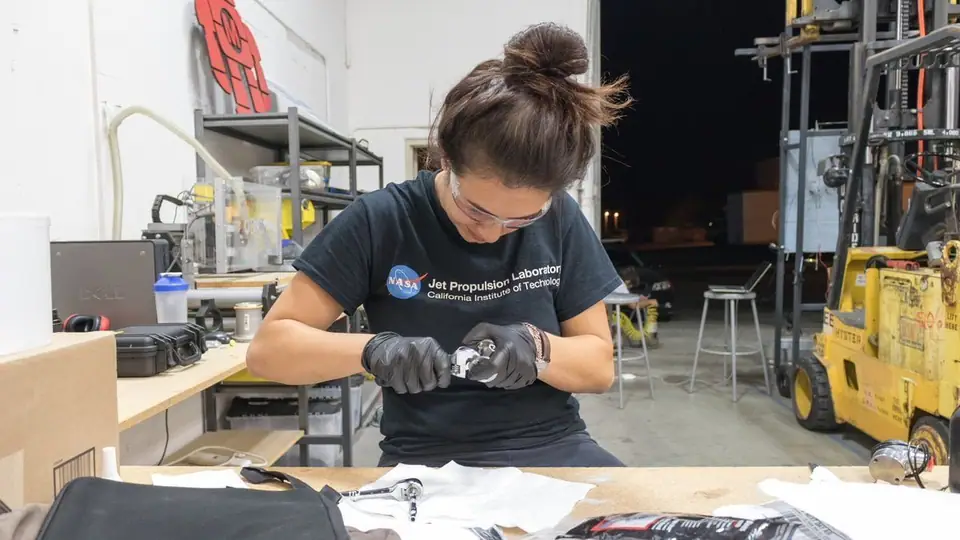
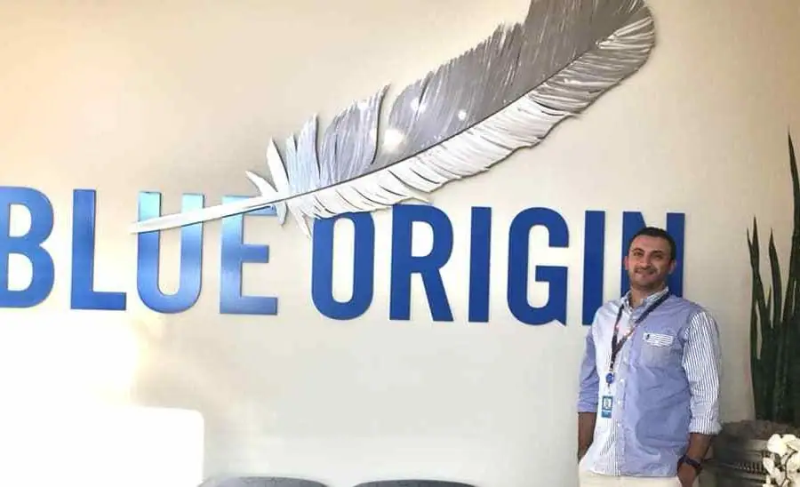
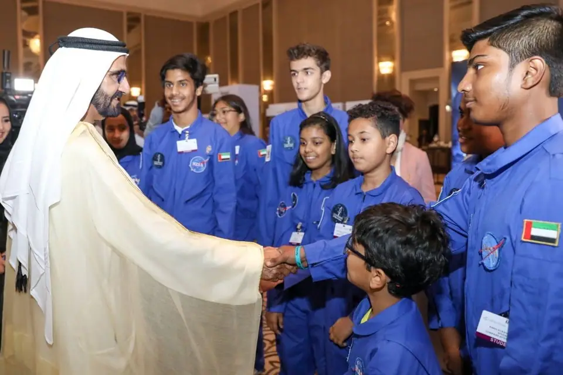
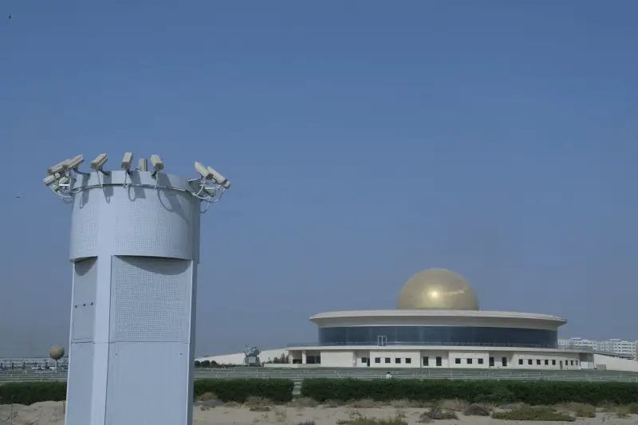
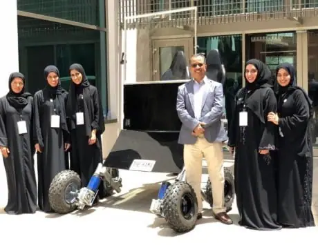
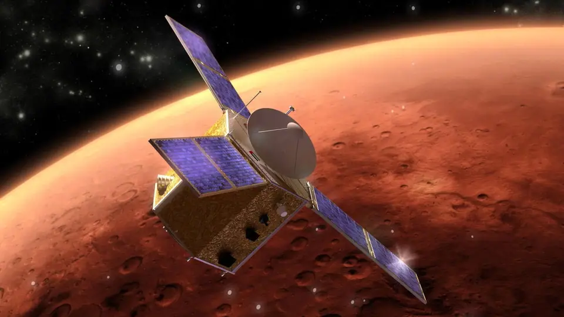
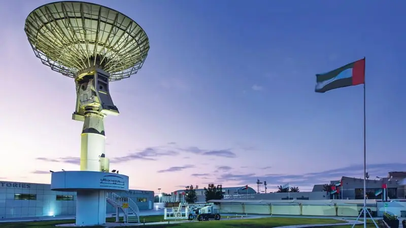
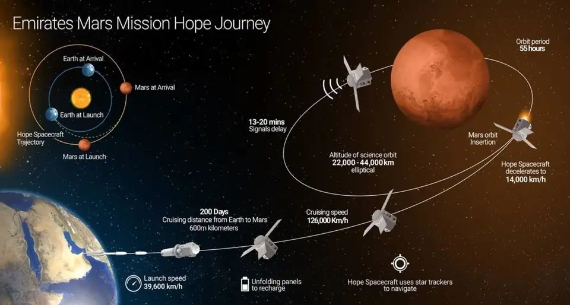
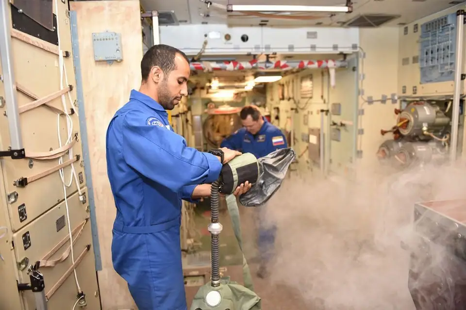

أخبار علمية ·
إلى أين وصلت أبحاث الفضاء العربية في 2019؟
حقق العالم العربي خلال العام 2019، إنجازات طموحة في قطاع الفضاء وأبحاثه، في خطوات طموحة لمواكبة التوجه العالمي، من شأنها أن تُدخِل العرب مستقبلًا في سباق السفر إلى الفضاء. وواكب مرصد المستقبل تلك الإنجازات العربية، علها تشكل بارقة أمل لأجيال المستقبل؛ وإليك أبرزها.
السعودية تشارك في السفر إلى القمر
للمرة الأولى في تاريخ البشرية، نجحت جمهورية الصين الشعبية، مطلع العام 2019، في الهبوط بنجاح بالمسبار تشانغ إي 4 غير المأهول، على الجانب البعيد غير المرئي من القمر في رحلة طال انتظارها وأجلتها البشرية لعقود، بمشاركةٍ من المملكة العربية السعودية. وهبط المسبار في حوض القطب الجنوبي حاملًا معدات لإجراء تجارب بيولوجية وتحليل جيولوجيا المنطقة غير المستكشفة من القمر.
وشاركت السعودية للمرة الأولى في تاريخها برحلة فضائية، بعد شهور من البحوث الفضائية المشتركة مع جمهورية الصين الشعبية. وعمل طاقم باحثين سعوديين من مدينة الملك عبد العزيز للعلوم والتقنية، على تصميم أنظمة استشعار فضائية وتصنيعها بهدف التقاط صور للقمر وتوفير بيانات علمية للباحثين في علوم الفضاء. وبلغ حجمها أقل من 10.5 سم مكعب وبوزن لا يتجاوز 630 جرامًا ودمجت في القمر الصيني.

أول عراقية تعمل في تطوير صواريخ ناسا
أصبحت الشابة ديانا السندي أول مهندسة عراقية تعمل في مجال تطوير الصواريخ السلمية لاستكشاف الفضاء وتصنيع محركات الأقمار الاصطناعية في وكالة الإدارة الأمريكية للملاحة الجوية والفضاء (ناسا). وتعمل السندي حاليًا مع شركة فيرجن أوربيت؛ مهندسةً لتطوير الدفع الصاروخي، في مشروع صاروخ يُدعى لانشر ون، يمتاز بانخفاض كلفة تصنيعه، وقدرته على حمل أقمار اصطناعية من أي مكان في العالم. وتُطلَق معظم صواريخ الفضاء بشكل عمودي، في حين يتسم صاروخ لانشر ون بإمكانية إطلاقه من أسفل الجناح الأيسر لطائرة بوينج 747، دون الحاجة لمنصات إطلاق عمودية ثابتة. وأطلقت ديانا السندي صفحة على موقع أنستجرام؛ تقول إنها تهدف لتشجيع الآخرين على الخوض في مجالات العلوم والهندسة والرياضيات والتقنية، وبشكل خاص الفتيات في العالم العربي.

عالِم فضاء أردني ينضم لمشروع بلو مون
انضم عالِم الفضاء الأردني الدكتور محمد طه عبابنة، في سبتمبر/أيلول الماضي، إلى فريق عمل بلو مون لاندر؛ المشروع الأكثر تشويقًا لبناء أول محطة دائمة للبشر على سطح القمر، وهو أحد مشاريع شركة بلو أوريجين المتخصصة في صناعة الصواريخ الفضائية، ويهدف إلى بناء محطة دائمة للبشر على سطح القمر.
وكان عبابنة، زود ناسا بابتكار غير مسبوق، وهو نظام تبريد خاص بالمركبات الفضائية العاملة في المريخ والقمر، صنعه وطوره مع فريق علمي عمل تحت قيادته على مدى شهور وضم خبراء وباحثين من شركة تقنيات التبريد المتقدمة (أدفانسد كولنج تكنولوجيز) وناسا وشركة لوكهيد مارتن. ويعمل نظام التبريد بكفاءة أداء تفوق الأنظمة المعمول بها حاليًا بأكثر من ثلاثة أضعاف، ما يشكل إنجازًا غير مسبوق قد يُحدِث قفزة نوعية في عالم تبريد إلكترونيات المركبات الفضائية المستقبلية، وأنظمة الأقمار الاصطناعية الصغيرة.

السودان يطلق أول قمر اصطناعي في تاريخه
وأطلق السودان في نوفمبر/تشرين الثاني الماضي، أول قمر اصطناعي في تاريخه، وهو القمر إس آر إس إس إس-1 ويؤدي مهام الاستشعار عن بعد. وأطلِق القمر الاصطناعي بمساعدة الصين على متن الصاروخ الصيني لونج مارش-4بي من مركز تاييوان لإطلاق الأقمار الاصطناعية في مقاطعة شانشي شمال الصين.
مصر تطلق أول أقمارها الاصطناعية للاتصالات
وبهدف سد الفجوة الرقمية، أطلقت مصر أول أقمارها الاصطناعية للاتصالات؛ طيبة-1، في 22 نوفمبر/تشرين الثاني الماضي، من مركز جويانا للفضاء بالقرب من مدينة كورو في جويانا الفرنسية. وتعاقدت مصر مع تحالف مكون من شركتي إيرباص وتاليس ألينيا سبيس لتطوير القمر الاصطناعي البالغ وزنه نحو 5640 كيلوجرام وصمم كي يبقى في مداره لفترة تصل إلى نحو 15 عامًا.
أول قمر اصطناعي يُصنِّعه علماء عرب
وأطلقت الإمارات العربية المتحدة، في مارس/آذار الماضي، اسم 813 على أول قمر اصطناعي عربي، كثمرة للتعاون بين عدد من الدول العربية، يُصنِّعه بالكامل علماء ومهندسون وفنيون عرب، تيمنًا بالعام 813 الذي شهد ذروة الحضارة العربية الإسلامية في عصر المأمون، وازدهار بيت الحكمة في بغداد؛ عاصمة الخلافة العباسية. ويأتي مشروع تصنيع القمر الاصطناعي العربي، ضمن ميثاق تأسيس المجموعة العربية للتعاون الفضائي، الذي وُقِّع بمبادرة إماراتية، في أبوظبي، ليكون أول مجموعة فضائية من نوعها تجمع تحت مظلتها 11 دولة عربية.

الإمارات تعتزم تسيير رحلات فضائية سياحية
وفي الشهر ذاته؛ وقعت وكالة الإمارات للفضاء، مذكرة تفاهم، مع شركة فيرجن جالاكتيك، وشركة ذا سبيس شيب، لدراسة فرص تسيير رحلات فضائية سياحية من الأراضي الإماراتية في المستقبل. وتضمنت المذكرة أيضًا، تحديد أطر التعاون بين الأطراف الموقعة في مجال إطلاق رحلات فضائية لأغراض علمية وتقنية وتعليمية، فضلًا عن التخطيط لبناء سفينة سبيس شيب الفضائية، ومركبة حاملة للطائرات لتشغيلها من الإمارات، والتعاون من أجل تأسيس مركز التميز لبحوث الجاذبية الصغرى في الإمارات، إلى جانب وضع خطط تشغيلية للمركبات الفضائية في مطار العين. لتتحول الإمارات إلى منصة علمية لأبحاث الفضاء، ومحطة لتسيير الرحلات الفضائية السياحية.
إطلاق استراتيجية الإمارات للفضاء 2030
وأطلقت الإمارات، كذلك، في الشهر ذاته، استراتيجيتها الوطنية لقطاع الفضاء 2030 التي تشرف على تنفيذها وكالة الإمارات للفضاء لتنظيم القطاع وتنميته على المستويين الإقليمي والعالمي وتعزيز مساهمته في الاقتصاد المحلي. وتهدف الاستراتيجية لتوجيه الأطراف المعنية والشركات العاملة والمشغلة لقطاع الفضاء ومختلف المشاريع المحلية، نحو سبل توطينه ودفع مسيرته؛ من خلال تنفيذ برامج ومهمات طموحة في الفضاء، وتعزيز جهود البحث والتطوير، وتوسيع نطاق استغلال الفضاء وفرص الاستفادة العلمية والتقنية من تطبيقات الفضاء، وخلق بيئة تنظيمية فعالة، وتطوير خبرات متخصصة وجذب أهم العقول وتحفيز الإبداع لدى الشباب، فضلًا عن بناء شراكات عملية بين المؤسسات الصناعية والتعليمية والبحثية، وتوطيد التعاون على المستوى الإقليمي والمحلي؛ وفقًا لمركز الإمارات للدراسات والبحوث الاستراتيجية.
شبكة الإمارات لرصد النيازك
وأطلقت دولة الإمارات، أواخر مايو/أيار الماضي، شبكة الإمارات لرصد الشهب والنيازك، كثمرة تعاون بين وكالة الإمارات للفضاء ومركز الشارقة لعلوم الفضاء والفلك. وتتكون الشبكة من ثلاث محطات مختلفة موزعة في أرجاء دولة الإمارات، لتسجيل الظواهر الفلكية في سماء الدولة، إذ تضم كل محطة كاميرات فلكية موجهة نحو السماء، وتسجل تلقائيًا بمجرد الكشف عن الشهب؛ سواء كان الشهاب جزءًا من زخات شهابية أو قطعة من حطام فضائي. وعند التقاط هذا الشهاب من أكثر من موقع، تحسب الشبكة مساره للوصول إلى تحديد مصدره. وتضم محطاته الثلاث 51 كاميرا متخصصة ترصد السماء آليًا؛ وتتمتع إحدى الكاميرات في كل محطة بعدسة واسعة الحقل، ما يسهل عملية تحديد الشهب اللامعة التي قد ينتج عنها نيزك يصل إلى الأرض، أما بقية الكاميرات في المحطة الواحدة فهي ذات حقل رؤية ضيق، تتيح الفرصة لتحليل الشهب بدقة أكبر ورسم مدار الشهاب حول الشمس.

جامعة الإمارات تحصل على عضوية اللجنة الدولية لأبحاث الفضاء
وحاز المركز الوطني لعلوم وتقنيات الفضاء في جامعة الإمارات العربية المتحدة، منتصف مايو/أيار الماضي، على عضوية اللجنة الدولية لأبحاث الفضاء (كوسبار).
سيارة مريخية إماراتية
وطورت طالبات جامعيات إماراتيات سيارة مريخية يمكنها السير والعمل على الكوكب الأحمر لمساعدة رواد الفضاء على التنقل خلال البعثات المستقبلية. ونفذ المشروع الطموح كل من عنود الكثيري، وفاطمة النعيمي، ومي المزروعي، وصفية محمد، وشيخة النقبي، طالبات كلية الهندسة قسم الهندسة الميكانيكية في جامعة الإمارات، تحت إشراف الأستاذ الدكتور محمد يونس. وسمَّى الفريق المركبة الجديدة، سيارة رام المريخية، وراعَيْن في تصنيعها وتطويرها الظروف الخاصة بسطح المريخ ومناخه. وتزن سيارة رام المريخية نحو 450 كيلوجرامًا، وتعمل بأربع بطاريات تزن الواحدة منها 36 كيلو جرامًا، وهي قابلة لإعادة الشحن بالطاقة الشمسية، وتزود البطاريات بدورها محركات كهربائية تعمل على تحريك عجلات السيارة.

محاكاة الحياة على المريخ
وأعلنت جامعة دبي في يوليو/تموز الماضي، عن عزمها إطلاق مشروع طموح لمحاكاة الحياة على المريخ، في مختبر خاص، بتعاون مع مجموعة وورلد ميشن وورلد الصينية. في مختبر ميشن زي الفضائي، الذي يمنح طلبة الإمارات فرصة لخوض تجربة الحياة في الفضاء، والعمل إلى جانب خبراء وباحثين متخصصين في مجالات الفضاء والتقنيات المستقبلية.

برنامج أبحاث علوم الفضاء للطلبة الجامعيين
وأطلقت دولة الإمارات، مطلع نوفمبر/تشرين الثاني الماضي، برنامج أبحاث علوم الفضاء للطلبة الجامعيين لعام 2020، كخطوة طموحة لتحقيق استراتيجية الإمارات للفضاء. وفتح مركز محمد بن راشد لعلوم الفضاء، باب التسجيل في الدورة السادسة من برنامج أبحاث علوم الفضاء للطلاب الجامعيين الإماراتيين غير المتخرجين في صيف العام المقبل، في تخصصات العلوم والهندسة. وسبق أن طرحت جامعة الإمارات، مسار علوم الفضاء، لطلبة كلية العلوم، كأحد المسارات التخصصية في قسم الفيزياء، ليقدم مواضيع متعلقة بتقنية إطلاق الأقمار الاصطناعية، والكواكب واستكشافها، والغلاف الجوي للأرض والكواكب، واستخدام الاستشعار عن بعد في دراسات علوم الفضاء. كمسار أكاديمي يحاكي البرامج العالمية لبناء جيل من المتخصصين في علوم الفضاء مستقبلًا.

مسبار الأمل
وفي أول مشروع عربي لاستكشاف الكوكب الأحمر، تعتزم الإمارات إطلاق مسبار الأمل من الأرض في يوليو/تموز 2020، ليصل إلى المريخ مطلع العام 2021، تزامنًا مع ذكرى مرور 50 عامًا على تأسيس الدولة. ويقدم المشروع إضافات جديدة للدراسات العلمية الدولية عن الكوكب الأحمر وتوقعات طموحة لفهم التغيرات المناخية على كوكب الأرض. ويتكون المسبار من مركبة مضغوطة سداسية الشكل؛ تصميمها يشبه خلايا النحل مصنوعة من الألمنيوم ذات بنية صلبة ووزن خفيف، محمية بغلاف مقوى من صفائح مركبة، حجمها ووزنها الكلي مماثل لسيارة صغيرة، إذ تزن نحو 1500 كيلوجرام متضمنًا وزن الوقود، وبعرض 2.37 متر وطول 2.90 متر.

أول رائد فضاء عربي يدخل محطة الفضاء الدولية
وفي سبتمبر/أيلول الماضي، كللت دولة الإمارات جهودها في مجال الفضاء، بوصول أول رائد فضاء إماراتي وعربي إلى محطة الفضاء الدولية، إذ دخل رائد الفضاء الإماراتي هزاع المنصوري، إلى المحطة عقب رحلة استغرقت نحو 6 ساعات، على متن مركبة الفضاء سويوز أم إس 15، التي انطلقت من محطة بايكونور الروسية في كازاخستان. ويبلغ المنصوري من العمر 35 عامًا. حاصل على بكالوريوس في علوم الطيران تخصص طيار عسكري من كلية خليفة بن زايد الجوية. يمتلك خبرة تمتد لأربعة عشر عامًا في الطيران الحربي، وخضع لمجموعة برامج تدريبية في دولة الإمارات وخارجها؛ منها دورات تخصصية متقدمة في النجاة من الغرق وتدريب على الدوران وقوة التسارع تصل إلى 9 جي وعلى مناورات العلم الأحمر في الولايات المتحدة. تأهل عام 2016 ليكون طيار استعراض جوي منفرد، ويشغل حاليًا منصب طيار إف سي إف على طائرة إف16 بي60. وشارك المنصوري مع فريق رواد الفضاء الآخرين خلال الرحلة في أبحاث علمية في الفضاء، و16 تجربة، منها 6 تجارب على متن المحطة.

المصدر: https://mostaqbal.ae/arab-space-research-and-progress-2019/
منشور منقول من أرشيف موقع الاتحاد كما نُشر، مع تنظيف التنسيق.